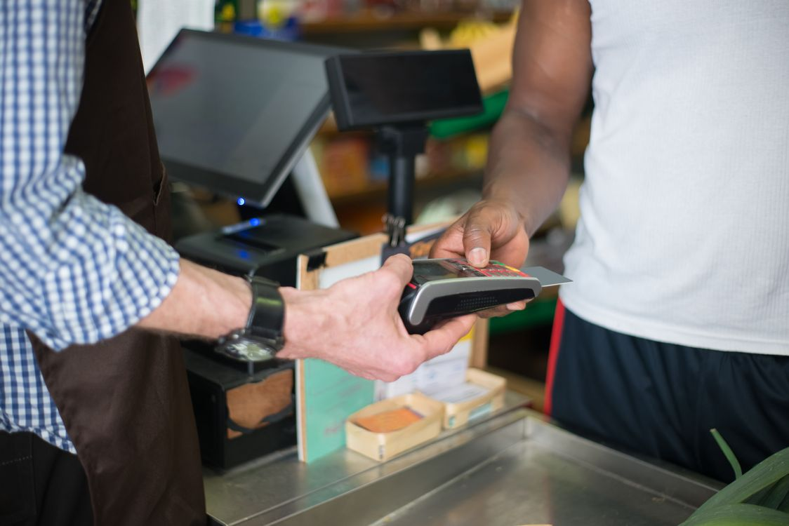
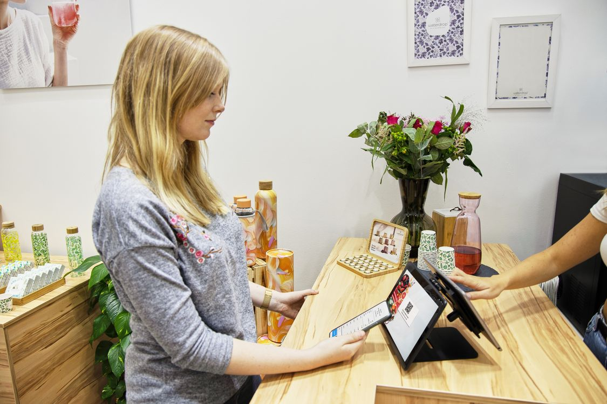

Offline vs Online Billing Software: Which Is Right for Your Shop?

Picture this: it is 7 in the evening, your shop is full, and the internet goes down. With one kind of billing software, your cashier keeps billing like nothing happened. With the other kind, the screen freezes, the queue grows, and you are back to a calculator and a paper notebook.
That one moment tells you almost everything you need to know about the offline vs online billing software debate. It is not really a debate about technology. It is a debate about your shop's reality: your internet, your power supply, your number of branches, and how much risk you can afford at the counter.
This guide explains both options in plain language, compares them honestly on the things that actually matter to a Pakistani shopkeeper — speed, cost, data safety, and control — and ends with the third option most shops end up choosing: a hybrid system that works offline first and syncs online when it can.
First, What Do "Offline" and "Online" Actually Mean?
Offline billing software runs on your own shop computer. Your products, prices, stock, and sales records live on that computer's hard drive. The cashier does not need the internet to make a bill, check stock, or record udhar. The internet is only needed occasionally — for updates, a backup, or syncing with a mobile app.
Online (cloud) billing software runs in a web browser or an app connected to a company's server. Your data lives on their computers, far away from your shop. Every bill, every stock check, every report travels over the internet. It is convenient — you can check your sales from home or from another city — but it only works as well as your connection does.
Most salespeople will tell you one of these is "old-fashioned" and the other is "the future." Ignore that. The right question is simpler: what happens in your shop when the connection drops?
The Counter Test: What Happens When the Internet Dies?
This is the test that matters most, and it is the test most software demos never show you, because demos always run on perfect Wi-Fi.
With offline billing software, nothing changes. The cashier scans, the bill prints, stock drops automatically, and the sale is saved on your computer. When the internet comes back, nothing needs to be "recovered," because nothing was ever lost.
With purely online billing software, billing stops — or slows to a crawl — the moment the connection drops. Some cloud systems have a limited "offline mode" that queues a few bills and uploads them later, but it often comes with restrictions: no stock lookup, no udhar history, no reports until you are back online. And if the outage lasts all day, that queue becomes a problem of its own.
In Pakistan, this is not a theoretical risk. Load shedding, weak signals in basement shops and markets, and shared Wi-Fi that slows down every evening are everyday realities. A system that needs perfect internet to bill a customer is a system that will embarrass you at the worst possible time — during rush hour.
The rule of thumb: billing is the one job in your shop that must never depend on the internet. Reports, backups, and checking sales from home can wait for a connection. A customer standing at your counter cannot.
Speed at the Counter: Local Wins, Every Time
Offline software talks to your own computer, so a bill appears the instant you scan. There is no round trip to a faraway server, no loading spinner, no "please wait" while a customer watches. On a busy day, that half-second difference per bill adds up to real minutes — and real customers served instead of lost.
Online software can feel just as fast when the connection is strong. But "when the connection is strong" is doing a lot of work in that sentence. The moment your Wi-Fi dips, every scan, every price lookup, and every bill print has to wait its turn. Staff notice it first, and they start dreading the system. Customers notice it second, and they start dreading the queue.
Speed is also why training matters. When the system responds instantly, new staff learn faster and trust it sooner. Our one-day staff training guide works so well partly because the software never keeps a trainee waiting — the cause and effect of every button press is immediate.
Cost: Subscription Forever vs One-Time Payment
This is where the two models genuinely differ, and where you should do the math before you fall in love with a demo.
Most online billing software charges a monthly or yearly subscription. It might look small — a few thousand rupees a month — but it never stops. Over five years, a "cheap" subscription often costs more than a one-time license, and if you stop paying, you usually lose access to your own sales data. That is worth reading twice: with many cloud systems, your business history is rented, not owned.
Offline software is usually sold as a one-time license. You pay once, the software is yours, and it keeps working whether or not you pay anything next year. The trade-off is that you are responsible for your own backups — though a good system makes that automatic, with daily backups on your own computer or drive.
Before you decide, run the five-year number, not the first-month number. Our honest POS price guide for Pakistan breaks down software, hardware, and hidden fees in rupees so you can compare like with like — including the subscriptions that quietly double when you add a second user or a second branch.
Data Safety and Control: Whose Computer Is Your Business On?
Online software companies will tell you — correctly — that their servers have professional security, automatic backups, and teams watching them around the clock. That is a real advantage, especially if your shop computer has never been backed up in its life.
But there is a flip side they mention less often. Your data sits on someone else's server, under someone else's terms. If the company raises its price, changes its features, or shuts down, your options are limited. If their server goes down, every one of their customers goes down together — and you cannot fix it from your shop.
Offline software keeps your data in your shop, on your computer, under your control. Nobody can lock you out of your own sales history for a missed payment. The risk is different, not smaller: if your hard drive fails and you have no backup, your data is gone. That is why the backup habit matters more than the software type. A system that backs itself up daily — to a USB drive, a second computer, or your Google Drive — removes the biggest weakness of the offline model.
Whichever model you choose, ask this question before buying: "If I stop using your software tomorrow, can I take my complete sales and stock data with me, in a format I can read?" A company that hesitates at that question has told you everything you need to know.
Multi-Branch and Remote Access: Where Online Genuinely Shines
Let us be fair: online software is not all downside. If you run two or three branches, cloud software lets you see all of them from one dashboard, compare sales, and move stock between branches without phone calls. If you travel, you can check today's sales from your phone. That convenience is real, and for multi-branch owners it can be the deciding factor.
But notice what that convenience is: it is about viewing your business remotely. It is not about billing. The smart setup separates the two jobs: billing happens locally, on each branch's own computer, no matter what the internet is doing — and the results sync to a central view whenever the connection allows. That is the hybrid model, and it is how serious retail software is increasingly built.
The Hybrid Option: Offline First, Online When Possible
A hybrid billing system works offline by default and syncs online in the background. At the counter, it behaves exactly like offline software: instant billing, full stock, full udhar history, no dependence on Wi-Fi. Behind the scenes, whenever the internet is available, it quietly uploads the day's sales, syncs stock across devices, and backs your data up to the cloud.
For most Pakistani shops, this is the honest answer to the offline vs online question — not because it is a compromise, but because it matches how shops actually run. Your counter needs offline reliability. Your owner brain wants online visibility. Hybrid gives you both, without making either one depend on the other.
When you are evaluating a "hybrid" claim, test it properly. Switch the Wi-Fi off, then try to bill, check a customer's udhar balance, and print a report. If all three work, it is genuinely offline-first. If billing works but udhar and stock disappear, it is just an online system with a waiting room. The difference matters at 7 p.m. on a busy evening.
Side-by-Side Comparison
- Works without internet: Offline — yes, fully. Online — no, or only partially. Hybrid — yes, fully at the counter.
- Billing speed: Offline — instant. Online — depends on connection. Hybrid — instant.
- Five-year cost: Offline — usually lowest (one-time). Online — subscription that never ends. Hybrid — varies; check whether syncing costs extra.
- Check sales from home: Offline — only with sync or remote access. Online — yes. Hybrid — yes, once synced.
- Multi-branch view: Offline — manual or per-branch. Online — built in. Hybrid — built in, once synced.
- Data ownership: Offline — yours, on your machine. Online — on the provider's server, under their terms. Hybrid — yours locally, with a synced copy.
- Biggest risk: Offline — losing data without backups. Online — a dead connection at rush hour, or losing access if you stop paying. Hybrid — the smallest of both, if backups and sync are automatic.
Which One Should Your Shop Choose?
Choose offline (or hybrid) if:
- Your internet is unreliable, shared, or slow during rush hours.
- You have load shedding or a shop in a market with weak signals.
- You want a one-time payment instead of a forever subscription.
- Your data staying in your own shop matters to you.
- You run one branch, or a few branches that bill independently.
Choose purely online if:
- You have fast, stable, backed-up internet at every branch.
- You need real-time, second-by-second visibility across many branches.
- You have no computer of your own and want to run everything from a tablet or browser.
- You are comfortable renting access to your data for as long as you use the system.
For the typical Pakistani kiryana store, pharmacy, garment shop, or general store — one branch, real customers at a real counter, and internet that is good but not guaranteed — the answer is clear: offline first, with online syncing on top. That is the setup that never leaves you explaining to a queue of customers why the system is "loading."
And whatever you choose, run the full checklist first. Our POS buyer's guide covers the questions that matter beyond offline vs online — Urdu support, data export, trial on your own counter, and the red flags that should send you walking away.

The 10-Minute Test Before You Buy Anything
Do not decide from a demo video. Install the trial on your own counter and run this test:
- Turn the Wi-Fi off. Bill five products, record one udhar sale, and print the bill. Everything should work.
- Check yesterday's sales and a customer's udhar balance — still with Wi-Fi off. If either is missing, the "offline mode" is thinner than advertised.
- Turn the Wi-Fi back on and watch the data sync. It should happen on its own, without you exporting files or pressing a sync button.
- Ask how you get your data out if you ever leave. Get the answer in writing, not as a promise.
- Do the five-year cost math, including every user, branch, and "premium" feature you will actually need.
A system that passes all five is a system you can build a shop on. A system that fails the first one will fail you on the busiest evening of the month — guaranteed.
The internet is a wonderful tool for a shop. It is a terrible thing for a shop to depend on at the counter. Choose software that treats it that way: offline when it matters, online when it helps, and yours always.
Photo credits: Customer paying by card at a checkout counter photo by Kampus Production · Touchscreen register at a retail counter photo by Jaykumar Bherwani · Couple paying with a smartphone at a supermarket checkout photo by Jack Sparrow · Woman paying with a tablet at a store counter photo by Tom Tillhub — all via Pexels.
Offline-first billing that syncs online? Try it free for 30 days.
shopcos soft: Rs 40,000 one-time (lifetime license), barcode billing in seconds, automatic stock deduction, digital khata with credit limits, per-cashier logins, 100% offline billing with online sync, full Urdu interface — and WhatsApp support in your language.
Start 30-day Free TrialQuestions? WhatsApp us: 0326 4025618